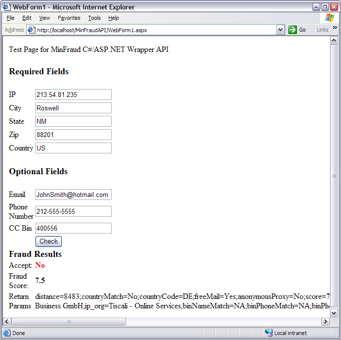

Title: minFraud Example Author: Shawn Pourchot Email: codeproject-sp@screamingbee.com Environment: VC.NET 2003,Windows XP, Windows 2000 Keywords: E-commerce, GEO IP,minFraud, MaxMind, Credit Card, C#,ASP.NET Level: Intermediate Description: Implementation of minFraud interface in C# Section ASP.NET SubSection C#

Any business that accepts credit cards online will quickly learn that standard credit card checks are insufficient. An additional layer you can add is IP location and email validation.
In this article I will set out to explain how to implement the minFraud service from MaxMind using ASP.NET and C#.
The minFraud interface implementation shown here has 2 parts:
The first part is just a web page, WebForm1.aspx. It collects the
credit card information and calls the minFraud class to get the fraud score and
results. You should use the country code (e.g. US, CA etc.) for the country and
the zipcode can be a postal code. The format for phone numbers is very tolerant
and need not conform to any particular style. CC Bin is the first 6 digits of a
credit card. For security reasons do not send the full credit card number to
minFraud.
Clicking “check” will send the results to minFraud for scoring.
private void btnCheck_Click(object sender, System.EventArgs e)
{
CCInfo ccInfo = new CCInfo();
ccInfo.IP = txtIP.Text;
ccInfo.City = txtCity.Text;
ccInfo.State = txtState.Text;
ccInfo.ZipCode = txtZip.Text;
ccInfo.Country = txtCountry.Text;
ccInfo.EMail = txtEmail.Text;
ccInfo.Phone = txtPhone.Text;
ccInfo.Bin = txtBin.Text;
double fraudScore;
string info;
if (MinFraud.IsSafe(ccInfo,out fraudScore,out info))
{
lblSafe.ForeColor = Color.Green;
lblSafe.Text = "Yes";
}
else
{
lblSafe.ForeColor = Color.Red;
lblSafe.Text = "No";
}
lblScore.Text = fraudScore.ToString();
lblResults.Text = info;
}
The second part is a class to post the user information to the minFraud website.
All the information on contacting and parsing results is contained in the class
MinFraud. Be sure to change _minFraudKey to your own
key. I chose to use the SSL link to minFraud servers in this example. They also
provide a non SSL link. Because minFraud uses a scoring system you can easily
adjust your risk by adjusting _fraudLimit to a level you are
comfortable with. It is recommended that in a production system you move this
variable to your web.config until you find the correct level.
public static bool IsSafe(CCInfo ccInfo, out double fraudScore,out string info)
{
bool safe = false;
fraudScore = 10.0;
info = string.Empty;
HttpWebResponse webResponse = null;
try
{
// Write the request to gateway (required data)
string reqString = "i=" + ccInfo.IP;
reqString += "&city=" + HttpUtility.UrlEncode(ccInfo.City);
reqString += "®ion=" + HttpUtility.UrlEncode(ccInfo.State);
reqString += "&postal=" + HttpUtility.UrlEncode(ccInfo.ZipCode);
reqString += "&country=" + HttpUtility.UrlEncode(ccInfo.Country);
reqString += "&license_key=" + _minFraudKey;
// optional data
if (ccInfo.Phone.Length > 0)
{
reqString += "&custPhone=" + ccInfo.Phone;
}
if (ccInfo.Bin.Length > 0)
{
reqString += "&bin=" + ccInfo.Bin;
}
// Calc MD5 on email
if (ccInfo.EMail.Length > 0)
{
string emailDomain = ccInfo.EMail.Substring(ccInfo.EMail.IndexOf("@")+1);
reqString += "&domain=" + emailDomain;
reqString += "&emailMD5=" + EmailHash(ccInfo.EMail);
}
// Find content length
UTF8Encoding encoding = new UTF8Encoding();
Byte[] byteArray = encoding.GetBytes(reqString);
// Create the request back
HttpWebRequest req = (HttpWebRequest) WebRequest.Create(_minFraudAddress);
try
{
// Set values for the request back
req.ContentLength = byteArray.Length;
req.Method = "POST";
req.ContentType = "application/x-www-form-urlencoded";
req.Timeout = 5000;
using (Stream requestStream = req.GetRequestStream())
{
requestStream.Write(byteArray,0,byteArray.Length);
requestStream.Close();
}
// Do the request to Gateway and get the response
webResponse = (HttpWebResponse)req.GetResponse();
}
catch
{
if (null != webResponse)
{
webResponse.Close();
}
// Attempt to use secondary server
req = (HttpWebRequest) WebRequest.Create(_minFraudAddress2);
// Set values for the request back
req.ContentLength = byteArray.Length;
req.Method = "POST";
req.ContentType = "application/x-www-form-urlencoded";
req.Timeout = 5000;
using (Stream requestStream = req.GetRequestStream())
{
requestStream.Write(byteArray,0,byteArray.Length);
requestStream.Close();
}
webResponse = (HttpWebResponse)req.GetResponse();
}
Stream strm = webResponse.GetResponseStream();
StreamReader stIn = new StreamReader(strm);
info = stIn.ReadToEnd();
stIn.Close();
// Check response for errors and such
char[] splitChars = {';'};
string[] respCodes = info.Split(splitChars);
foreach(string s in respCodes)
{
if (-1 != s.IndexOf("score="))
{
fraudScore = double.Parse(HttpUtility.UrlDecode(s.Substring(s.IndexOf("=")+1)));
safe = (fraudScore < _fraudLimit);
break; // nothing else to do for now
}
}
}
catch
{
// Log exception
}
finally
{
if (null != webResponse)
{
webResponse.Close();
}
}
return safe;
}
An interesting feature of minFraud is that it contains a live database of suspected fraudulent email addresses. You can check your customers email address against this database by doing an MD5 hash on the email address and passing it to minFraud.
private static string EmailHash(string email)
{
// Must be lower case before hashing
email = email.ToLower();
Encoder enc = System.Text.Encoding.UTF8.GetEncoder();
// Create a buffer large enough to hold the string
byte[] byteText = new byte[email.Length];
enc.GetBytes(email.ToCharArray(), 0, email.Length, byteText, 0, true);
// Now that we have a byte array we can ask the CSP to hash it
MD5 md5 = new MD5CryptoServiceProvider();
byte[] result = md5.ComputeHash(byteText);
// Build the final string by converting each byte
// into hex and appending it to a StringBuilder
StringBuilder downloadHash = new StringBuilder();
foreach(byte b in result)
{
downloadHash.Append(Convert.ToString(b,16).PadLeft(2,'0'));
}
return downloadHash.ToString();
}
To setup a free trial account for minFraud visit www.maxmind.com
This documentation and the accompanying files are provided "as is" with no expressed or implied warranty. No responsibilities for possible damages, or side effects in its functionality. The user must assume the entire risk of using this code. The author and Screaming Bee LLC accepts no liability if it causes any damage to your computer, website, software, reputation or your love life. Use at your own risk.
Shawn is President and co-founder of Screaming Bee LLC.
He has been developing software for more years then he cares to remember. One of his ealiest projects, AutoGreet, written in 6502 assembly won him the affection and hatred of a multiline BBS community (remember those?). Currently his projects involve ASP.NET/C# and driver development at Screaming Bee.
Screaming Bee is a leader in voice changing software and solutions for online
games and messenger applications.
For more information please visit: http://www.screamingbee.com
Click here to view Shawn Pourchot's online profile.